Chapter 3: Syntax Analysis¶
约 8016 个字 68 行代码 19 张图片 预计阅读时间 28 分钟
Syntax Analysis Overview¶
语法分析是编译器前端（Front-end）的重要组成部分。在词法分析器（Lexer）将源程序转化为词法标记流（Stream of tokens）之后，语法分析器（Parser）负责解析程序的短语结构，并生成抽象语法树，为后续的语义分析做准备。
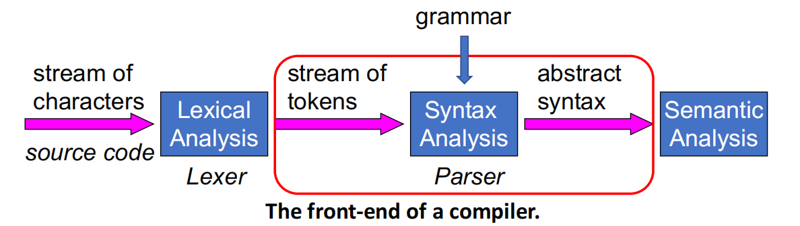
需要知道编程语言的语法规则，才能进行语法分析。
为什么需要语法分析？
- 语法检查: 检查输入源代码的语法是否合法。有些代码可能没有词法错误，但包含多个语法错误（如括号不匹配、缺少分号等）。
- 构建语法分析树 (Parse Tree): 明确表达式和语句的结构，理清操作符的结合关系，从而简化后续阶段（如表达式的求值计算）。
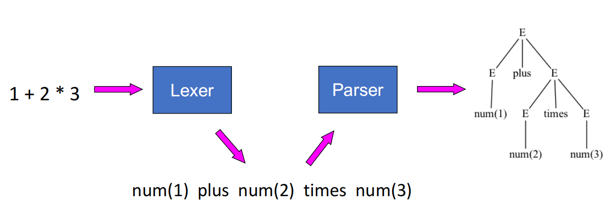
Context-Free Grammars (CFG)¶
为了构建语法分析器，我们需要精确地描述编程语言的语法。正则表达式（Regular languages）虽然广泛使用，但它的表达能力不足以处理编程语言中常见的递归结构（例如嵌套的括号 ((1+2) + 3)）。因此，我们需要使用更强大的上下文无关文法（CFG）。
CFG Components¶
一个上下文无关文法包含以下四个基本元素：
- 终结符集合 (Terminals, \(T\)): 字母表中的基本符号。在语法分析中，终结符就是词法分析器生成的词法标记 (Lexical tokens)。
- 非终结符集合 (Non-terminals, \(N\)): 用于表示语法结构的变量。
- 起始符号 (Start symbol, \(S\)): 属于非终结符集合中的一个特殊符号（\(S \in N\)）。
- 产生式集合 (Productions/Rules): 形式为 \(X \rightarrow Y_1 Y_2 \dots Y_k\)，其中 \(X\) 是非终结符，右侧的 \(Y_i\) 可以是终结符、非终结符或空串 \(\epsilon\)。
Derivations¶
推导是根据文法生成字符串的过程：
- 从仅包含起始符号 \(S\) 的字符串开始。
- 找到字符串中的任意一个非终结符 \(X\)，用它的某个产生式的右半部分（\(Y_1 \dots Y_k\)）进行替换。
- 重复替换步骤，直到字符串中只剩下终结符为止。
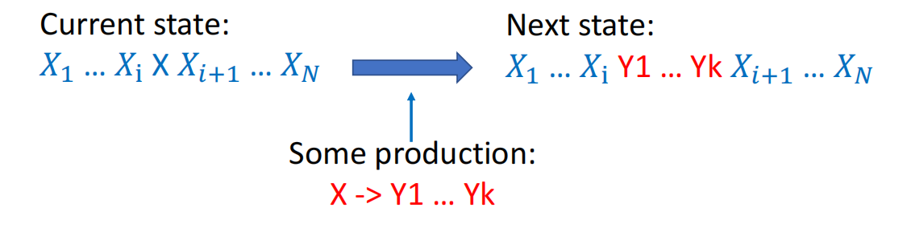
一个字符串如果能从起始符号推导出来，那么它就属于该文法所定义的语言 \(L(G)\)。
straight line syntax
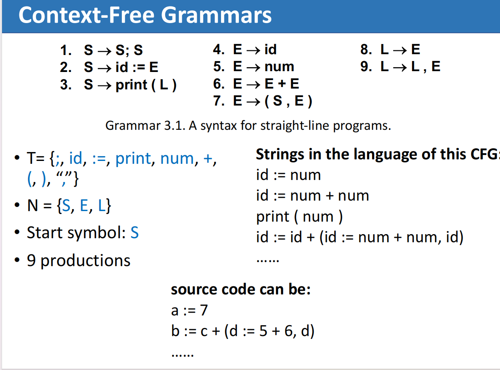
Parse Tree¶
推导的过程可以用树状结构来直观展示，即语法分析树：
- 根节点: 起始符号 \(S\)。
- 内部节点: 非终结符。
- 叶子节点: 终结符。对叶子节点进行中序遍历（In-order traversal），就能得到原始的输入字符串。
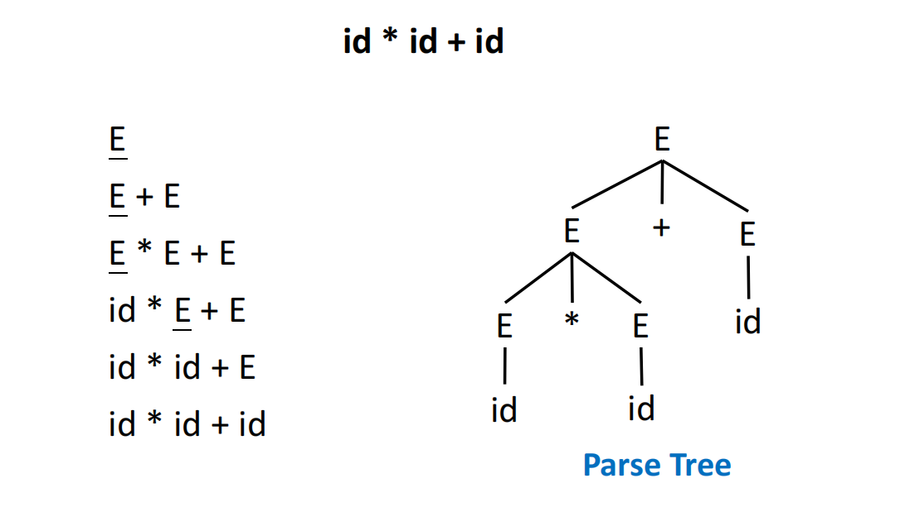
Left-most Derivation and Right-most Derivation¶
- 最左推导 (Left-most derivation): 每一步推导总是选择替换最左边的非终结符。
- 最右推导 (Right-most derivation): 每一步推导总是选择替换最右边的非终结符。
在无二义性的文法中，最左推导和最右推导最终都会生成完全相同的语法分析树。最左和最右推导的概念在实现具体的语法分析算法时非常重要。
Ambiguous Grammars¶
What is Ambiguity?¶
如果一个文法可以为同一个字符串生成两棵或多棵不同的语法分析树（或者说，同一个字符串存在多个不同的最左/最右推导），那么这个文法就是二义性文法。
编译器依赖语法分析树来推导程序的实际含义。如果文法存在二义性，程序的含义就会变得不明确（Ill-defined）。
Example
例如，对于表达式 2 * 3 + 4，如果文法不加区分，可以生成两种树：
- 先计算
2 * 3再加4（结果为10）。 - 先计算
3 + 4再乘2（结果为14）。
Handling Ambiguity¶
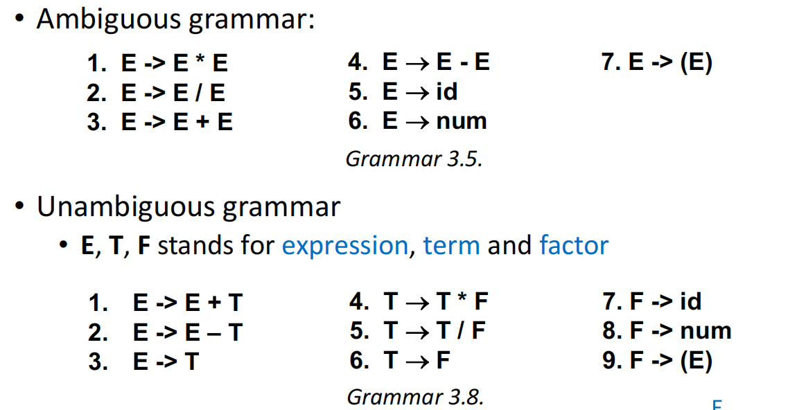
处理二义性最直接的方法是将二义性文法转化为无二义性文法。我们可以通过引入新的非终结符来强制规定操作符的优先级和结合性。
Precedence¶
- 核心思想: 优先级越高的操作符，在语法推导过程中应该被越晚推导出来（在语法树中更靠近叶子节点）。
- 实现方式: 引入类似表达式 (Expression, \(E\))、项 (Term, \(T\)) 和因子 (Factor, \(F\)) 的层次结构。
例如，为了让乘除
* /的优先级高于加减+ -，文法设计为： 这样定义后，加法操作会在更高的树层级被处理，从而保证了乘法先结合。
Left-Association¶
- 核心思想: 同级操作符（如连减
1 - 2 - 3）应该被解析为(1 - 2) - 3而不是1 - (2 - 3)。 - 实现方式: 使用左递归 (Left recursion)。即产生式右侧的第一个符号与左侧的符号相同。例如使用
X -> X op Y而不是X -> Y op X。在上面的例子中，E -> E + T就是典型的左递归，它保证了加法是左结合的。因为这样生成的树就是左边高度比右边高.
(注：某些语言天生具有二义性且无法转化为无二义性文法，这类语言作为编程语言会带来问题。)
EOF Marker¶
在语法分析的最后，我们需要确保整个文件被完整解析，而不是只解析了开头的一部分。
- 为此，我们引入一个特殊的文件结束标记
$(EOF)。 - 并在文法中添加一个新的起始符号（如 \(S'\)）和一条新的产生式：
S' -> S$。 - 这表明在完成一个完整的 \(S\) 结构解析之后，必须紧接着到达文件末尾。
语法分析器类型概述¶
语法分析器总体上可以分为三大类：通用分析器（效率太低，不用于生产环境）、自顶向下分析器（Top-Down）和自底向上分析器（Bottom-Up）。
-
自顶向下分析 (Top-Down Parsing): 从语法树的根节点向叶子节点构建，通常从左到右扫描输入流，其本质是为输入字符串寻找最左推导 (Leftmost derivation)。
-
大部分现代编程语言的语法都可以使用 LL 文法（常用于手工编写的自顶向下分析器）或 LR 文法（表达能力更强，常用于自动生成工具）来描述。
从上到下，从左到右匹配输入流。
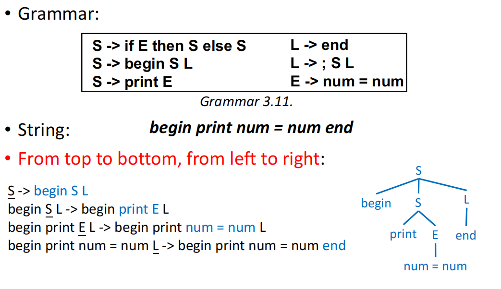
Recursive-Descent Parsing¶
递归下降分析是自顶向下分析的一种通用形式，它的特点是简单且可以手工编写。
- 为文法中的每一个非终结符编写一个递归函数。调用该函数即表示尝试匹配该非终结符。
- 文法产生式的右侧转化为函数体内部的具体逻辑（例如使用
switch语句）。 - 维护一个全局标记（如
tok），并通过诸如eat(token)的辅助函数来消耗匹配成功的终结符并获取下一个标记。
Backtracking¶
如果面对某个输入标记（如 num）时有多个产生式可以选择，简单的递归下降可能需要“猜测”并尝试。如果猜错，就会面临回溯。回溯的代价极高，会导致尝试的路径呈指数级爆炸。
Example
考虑如下文法：
当输入为 num * num 时，分析器在开始处理 A 时，看到的第一个输入符号是 num。但两条产生式都以 num 开头，因此无法仅凭当前符号立即决定该选哪一条。
如果分析器先“猜”第一条产生式 A -> num + num，那么它会先匹配第一个 num，接着期待下一个符号是 +。但实际读到的却是 *，说明这次猜测失败。
这时分析器就必须退回到刚开始处理 A 的位置，撤销前面的尝试，再改用第二条产生式 A -> num * num 重新匹配。这个“猜错后退回重试”的过程，就是回溯。
Predictive Parsing¶
为了解决回溯带来的性能问题，引入了预测分析。它是递归下降分析的特例，不需要回溯。
LL(k) Parsing¶
预测分析通过向前查看（Lookahead）固定数量的符号（通常是 \(k=1\) 个）来精准决定应该使用哪条产生式。这种分析方法可以解析 LL(k) 文法（从左到右解析，最左推导）。
Predictive Analysis Core Conditions¶
要在 \(k=1\) 的情况下精准选择产生式，我们必须提前知道每条产生式推导后可能出现的首个终结符。这就引入了构建预测分析表所需的三大核心概念：Nullable、First 集合和 Follow 集合。
Core Collections: Nullable, FIRST and FOLLOW¶
在计算这些集合时，为了保证算法的高效性，通常按照以下顺序进行迭代计算：先计算 Nullable，再计算 FIRST，最后计算 FOLLOW。
Definition
- 定义: 如果非终结符 \(X\) 能够推导出空串 \(\epsilon\)（即 \(X \rightarrow^* \epsilon\)），则
Nullable(X) = True。 - 计算方法: 类似于闭包计算，通过迭代查找。如果产生式 \(X \rightarrow Y_1 Y_2 \dots Y_k\) 中的所有 \(Y_i\) 都是 Nullable，那么 \(X\) 也是 Nullable。
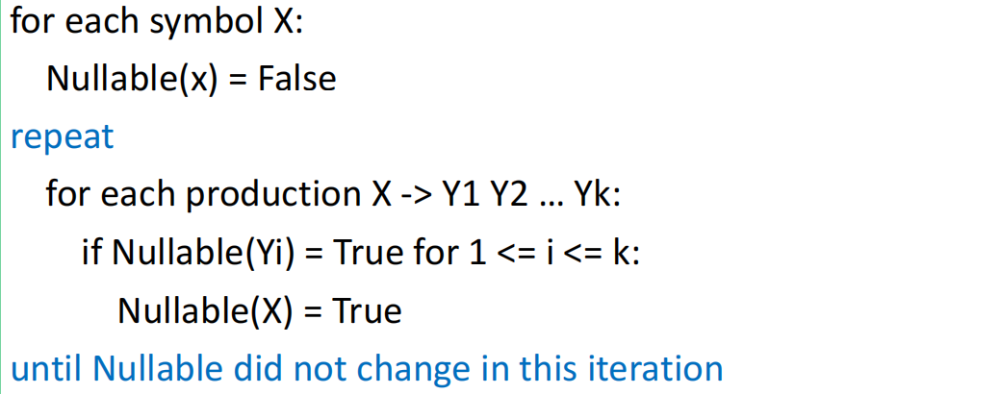
- 定义: \(FIRST(\gamma)\) 指的是从符号串 \(\gamma\) 推导出的字符串中，可能作为起始位置的所有终结符的集合。
- 计算规则:
- 如果 \(X\) 是终结符，则 \(FIRST(X) = \{X\}\)。
- 如果 \(X \rightarrow Y_1 Y_2 \dots Y_k\)，则将 \(FIRST(Y_1)\) 加入 \(FIRST(X)\)；如果 \(Y_1\) 是 Nullable，还要把 \(FIRST(Y_2)\) 加入，依此类推。
- \(F_1 = FIRST(Y_1)\)
- \(F_2 = FIRST(Y_2) if Y_1 is Nullable else F_2 = \emptyset\)
- \(F_3 = FIRST(Y_3) if Y_1 and Y_2 are Nullable else F_3 = \emptyset\)
- ...
- \(F_k = FIRST(Y_k) if Y_1, Y_2, ..., Y_{k-1} are Nullable else F_k = \emptyset\)
- 定义: 对于非终结符 \(X\)，\(FOLLOW(X)\) 指的是在某个句型中，可能紧跟在 \(X\) 之后出现的所有终结符的集合。对于开始符号，还需要将输入结束标记
$加入其 FOLLOW 集合。 -
计算规则:
- 对于每个文法的开始符号 \(S\)，将输入结束符号（如 $）加入 \(FOLLOW(S)\)。
- 对于文法中每条产生式 \(Y \rightarrow \alpha X \beta\)：
- 将 \(FIRST(\beta)\) 中的所有终结符加入 \(FOLLOW(X)\)（注意不包括 \(\epsilon\))。
- 如果 \(\beta\) 可以导出 \(\epsilon\)（即 \(\beta \Rightarrow^* \epsilon\)，\(\beta\) 是 Nullable），再将 \(FOLLOW(Y)\) 加入 \(FOLLOW(X)\)。
- 不断迭代以上规则，直到所有集合都不再发生变化。
-
归纳表达式：
- 对于任意 \(\alpha, \beta\)，若 \(Y \rightarrow \alpha X \beta\)，则 \(FOLLOW(X) = FOLLOW(X) \cup FIRST(\beta)\)
- 若 \(Y \rightarrow \alpha X \beta\) 且 \(\beta \Rightarrow^* \epsilon\)，则 \(FOLLOW(X) = FOLLOW(X) \cup FOLLOW(Y)\)
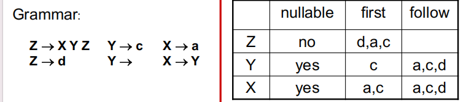
Predictive Parsing Tables¶
利用上述三个集合，我们可以构建一个二维的预测分析表 \(M\)。表的行代表非终结符 \(X\)，列代表前瞻终结符 \(t\)，单元格内的内容表示遇到 \(t\) 时应选择的产生式。
Filling the Table¶
对于文法中的每条产生式 \(X \rightarrow \gamma\)：
- 如果终结符 \(t \in FIRST(\gamma)\)，则在表格的 \([X, t]\) 处填入 \(X \rightarrow \gamma\)。
- 如果 \(\gamma\) 是 Nullable（即能推导出空串），并且 \(t \in FOLLOW(X)\)，同样在表格的 \([X, t]\) 处填入 \(X \rightarrow \gamma\)。
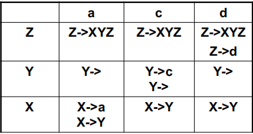
Summary
对于\(FIRST\)和\(FOLLOW\)集合:
- \(FIRST(X)\) 包含了所有可能作为 \(X\) 推导出的字符串的第一个符号的终结符,是X内部的概念。
- \(FOLLOW(X)\) 包含了所有可能紧跟在 \(X\) 后面出现的终结符,是X外部的概念。
Syntax Errors and LL(1) Definition¶
- 空白单元格: 如果表格中的某个单元格为空，说明在当前非终结符下遇到该输入属于语法错误 (Syntax errors)。
- LL(1) 文法: 如果按照上述规则构建的预测分析表没有任何包含重复产生式的单元格（即没有冲突），那么该文法就被称为 LL(1) 文法。任何二义性文法都不可能是 LL(k) 文法。
Non-Recursive Predictive Parser¶
除了编写递归函数外，还可以通过显式地维护一个栈 (Stack) 来实现非递归的预测分析器。
- 基本动作:
- 将起始符号 \(S\) 和 EOF 标记
$压入栈中。 - 查看栈顶符号和当前的输入符号。
- 如果栈顶是终结符且与输入匹配，则执行 Match（消耗输入符号并弹出栈顶）。
- 如果栈顶是非终结符，则查阅预测分析表，找到对应的产生式（如 \(S \rightarrow (S)S\)），将栈顶非终结符弹出，并将其产生式的右侧逆序压入栈中。
- 如果栈为空（只剩下
$），则接受解析 (Accept)。
- 将起始符号 \(S\) 和 EOF 标记
这就类似于PDA和CFG的互推
Grammar Transformations¶
当一个文法无法生成无冲突的 LL(1) 分析表时，我们需要对其进行改写。
Eliminate Left-Recursion¶
- 问题: 左递归产生式（例如 \(E \rightarrow E + T\)）会导致 \(FIRST(E+T) \subseteq FIRST(E)\) 且 \(FIRST(E) \subseteq FIRST(E+T)\)，从而使得 \(FIRST(E) = FIRST(E+T)\)。这会在 LL(1) 解析表中产生多重条目冲突，导致自顶向下分析器无法处理。
- 解决方案: 将左递归转换为右递归 (Right recursion)。
- 原始: \(A \rightarrow A\alpha \mid \beta\)
- 转换后: \(A \rightarrow \beta A'\) 且 \(A' \rightarrow \alpha A' \mid \epsilon\)。
Left Factoring¶
- 问题: 如果同一个非终结符的两个产生式以相同的符号串开头（例如 \(S \rightarrow \text{if } E \text{ then } S \text{ else } S\) 和 \(S \rightarrow \text{if } E \text{ then } S\)），它们将在 LL(1) 分析表中的同一单元格产生冲突。
- 解决方案: 提取公共前缀，延迟决策 (Delay the decision)。引入一个新的非终结符来处理剩余的部分。
- 转换后: \(S \rightarrow \text{if } E \text{ then } S X\) 且 \(X \rightarrow \text{else } S \mid \epsilon\)。
Bottom-Up Parsing¶
前面的 LL / 预测分析属于自顶向下分析；而 LR 属于自底向上分析 (Bottom-Up Parsing)。
自底向上的核心思想是：
- 从输入串的叶子节点开始，逐步向上规约，直到规约为开始符号。
- 它本质上是在反向执行最右推导 (Right-most derivation in reverse)。
- 最常见的实现方式是Shift-Reduce Parsing。
Shift-Reduce Parsing¶
在移进-规约分析中，分析器维护一个栈和一个输入缓冲区，并不断执行以下动作：
- Shift: 将下一个输入符号移进栈中。
- Reduce: 当栈顶符号串匹配某个产生式右部时，用其左部非终结符替换。
- Accept: 成功规约到增广文法的开始符号，并读到 EOF。
- Error: 当前状态下既不能移进也不能规约。
Info
Bottom-Up Parsing 的难点不在于“如何规约”，而在于什么时候规约。
如果规约得太早，就可能破坏后续更大的结构；如果规约得太晚，则会错过正确句柄。
LR Parsing¶
What Does LR Mean?¶
LR(k)中的含义：
- L: 从左到右扫描输入 (Left-to-right scan)。
- R: 构造最右推导的逆过程 (Rightmost derivation in reverse)。
- k: 使用 k 个向前看符号 (Lookahead)。
与 LL 分析相比，LR 分析的优势在于：
- 它不需要在刚看到产生式右部开头时就做决定。
- 它可以把决策推迟到“看到了足够多的右部内容”之后。
- 因此 LR 文法类通常比 LL 文法类更强。
Parser Configuration¶
一个 LR 分析器通常需要跟踪：
- 当前读到哪个输入位置。
- 一个表示“已经识别出的前缀”的栈。
- 栈顶对应的状态 (State)，也就是“当前处于哪种可行前缀识别环境”。
Augmented Grammar¶
和 LL 一样，LR 分析通常先把原文法增广为：
这样 Accept 的条件就变成：已经识别出完整的 S且下一个输入符号是 $。
LR(0) Parsing¶
LR(0) 是最简单的 LR 分析。它在做 shift / reduce 决策时完全不看向前看符号，只依赖当前状态。
LR(0) Item¶
LR(0) 的核心抽象是 item（项目）：
其中圆点 . 表示当前分析进度：
- \(\alpha\) 表示已经识别出来的部分。
- \(\beta\) 表示接下来还希望看到的部分。
例如：
- \(E \rightarrow T \cdot + E\) 表示已经识别出
T，接下来期待+ E。 - \(T \rightarrow x \cdot\) 表示产生式右部已经全部识别完，可以考虑规约。
Closure and Goto¶
LR(0) 自动机中的每个状态都是一个 item 集合。构造状态图时最重要的两个操作是 Closure 和 Goto。
Closure¶
如果某个 item 中圆点前面已经走到一个非终结符 X 前，即：
那么说明接下来有可能展开 X，因此需要把所有形如 \(X \rightarrow \gamma\) 的项目
都加入当前状态，并持续迭代直到不再新增项目。
Closure(I):
repeat
for each item A -> α . X β in I
for each production X -> γ
add X -> . γ to I
until I no longer changes
Goto¶
如果状态 I 中包含项目
那么在识别到符号 X 之后，就进入一个新状态，其中对应项目变为：
然后再对这些新项目做一次 Closure。
Building the LR(0) DFA¶
LR(0) 自动机的构造过程可以概括为：
- 从开始状态 \(Closure({S' -> . S \$ })\) 出发。
- 对每个状态中的每个可前移符号 X 计算 \(Goto(I, X)\)。
- 将得到的新项目集合作为新状态加入。
- 直到状态和边都不再增长。
这些状态描述的其实是所有可能的可行前缀 (Viable Prefix)。
LR(0) Parse Table¶
得到 DFA 后，就可以进行算法以及填写 LR(0) 分析表。
LR(0) Parsing Algorithm¶
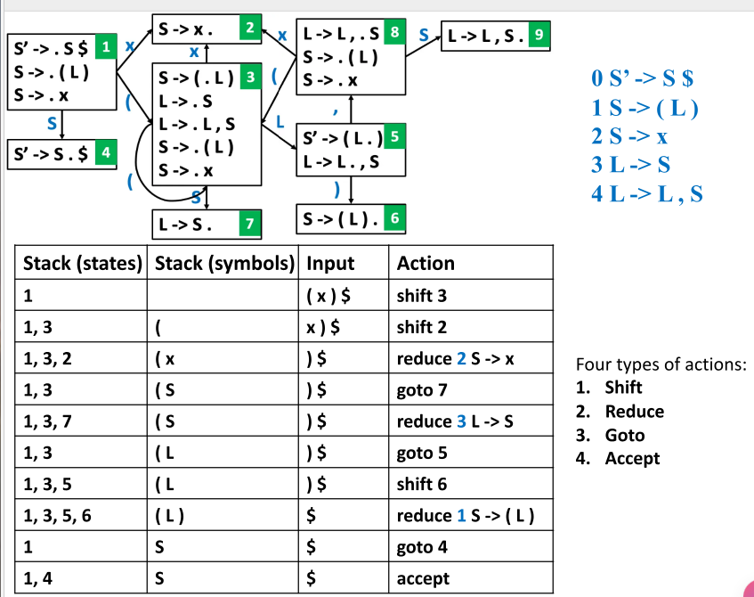
算法流程非常统一，后续 SLR / LR(1) 也沿用这套框架：
- 查看栈顶状态和当前输入符号。
- 根据分析表执行动作：
shift n: 读入一个输入符号，并压入状态n。这里其实是两步，因为要先读入符号再根据状态转移到新状态。reduce k: 按第k条产生式规约；弹出右部长度对应的状态数；再根据新栈顶和左部非终结符查询goto。accept: 分析成功。error: 报告语法错误。
关键在于状态栈和符号栈需要一一对应，每次 shift 都要把新状态压入栈顶，每次 reduce 都要弹出对应数量的状态,然后根据栈顶剩余状态和reduce的表达式左侧非终结符进行一次goto
Action / Goto 表项规则¶
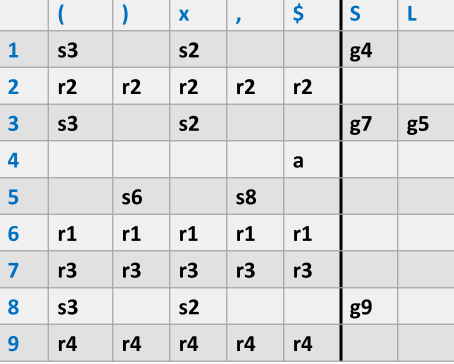
- 若状态 \(i\) 在终结符 \(t\) 上有一条边到状态 \(j\)，则 \(ACTION[i, t] = shift j\)(sj)。
- 若状态 \(i\) 在非终结符 \(X\) 上有一条边到状态 \(j\)，则 \(GOTO[i, X] = j\)(gj)。
- 若状态 \(i\) 中存在完成项目 \(A \rightarrow \alpha \cdot\)，则对**所有终结符**填入 \(reduce A \rightarrow \alpha\)(rk)。
- 若状态 \(i\) 中存在 $S' \rightarrow S \cdot $，则 \(ACTION[i, \$] = accept\)。
Warning
LR(0) 的“完成项目对所有终结符都填 reduce”非常激进，这也是 LR(0) 容易产生冲突的根本原因。
Why LR(0) Is Too Weak¶
LR(0) 的限制很明显：
- 它只根据状态做决定。
- 一旦状态中出现完成项目，就倾向于“无条件规约”。
- 因此很容易遇到冲突：
- Shift-Reduce Conflict: 既可以移进，也可以规约。
- Reduce-Reduce Conflict: 同一位置可以按两个不同产生式规约。
如果某个文法构造出的 LR(0) 表没有冲突，那么它才是 LR(0) grammar。
SLR Parsing¶
SLR 是 Simple LR Parsing。它的目标是：在保留 LR(0) 状态机构造方式的同时，用更精细的规则放置 reduce 动作。
Motivation¶
考虑文法：
在某些 LR(0) 状态中会出现完成项目 E -> T .，按 LR(0) 规则这意味着对所有终结符都要填 reduce 2。
但这显然不合理，因为 E -> T 只有在某些后继符号出现时才真的应该规约。
Core Idea¶
SLR 的修正是：
- 若状态中有完成项目 \(A \rightarrow \alpha \cdot\)，
- 不再对所有终结符填写 reduce，
- 而是只对
FOLLOW(A)中的符号填写 reduce。
也就是：
Reduce Rule in SLR¶
for each state I in T
for each completed item A -> α . in I
for each token a in FOLLOW(A)
ACTION[I, a] = reduce A -> α
Why SLR Works Better Than LR(0)¶
FOLLOW(A) 提供了一种“全局语法上下文”：
- 它告诉我们：当一个
A已经被识别出来时，后面合法地可能跟着哪些终结符。 - 因此 SLR 能避免一些“明明当前 lookahead 不可能出现，却仍然规约”的错误动作。
换句话说：
LR(0)：完成项目一出现，就想规约。SLR：完成项目出现后，先检查当前 lookahead 是否属于FOLLOW(A)，只有合法时才规约。
Limitation of SLR¶
SLR 虽然比 LR(0) 更强，但它仍然不够精细，因为：
FOLLOW(A)是针对整个文法中非终结符A的**全局集合**。- 它没有区分 “
A出现在不同语境里时，后面真正可能出现的符号”。
因此某些文法不是 SLR 文法，但仍然可以被更强的 LR(1) 处理。
LR(1) Parsing¶
LR(1) 在 LR 状态中显式加入了 1 个向前看符号 (Lookahead)，因此比 SLR 更精确。
LR(1) Item¶
LR(1) 项写作：
其中：
- \(A \rightarrow \alpha \cdot \beta\) 是 LR(0) 核心项目。
- \(a\) 是 lookahead，表示当右部完整识别结束后，后面允许出现的终结符。
这个 item 的直观含义是：
- 栈顶已经对应于 \(\alpha\)；
- 当前输入应该能够由 \(\beta a\) 推出。
因此对于项目 \((A \rightarrow \alpha \cdot \beta, a)\)，下一个可能输入应属于：
LR(1) Closure¶
与 LR(0) 相比，LR(1) 的 Closure 只在一个地方不同：
当圆点前面遇到非终结符 X 时，不只是把 X -> . γ 加入状态，还要把 lookahead 传递进去。
若有项目：
对每个产生式 \(X \rightarrow \gamma\)，以及每个
都加入：
Closure(I):
repeat
for each item (A -> α . X β, z) in I
for each production X -> γ
for each w in FIRST(βz)
add (X -> . γ, w) to I
until I no longer changes
LR(1) Goto¶
Goto 的结构和 LR(0) 相同，只不过要保留 lookahead：
Goto(I, X):
J = {}
for each item (A -> α . X β, z) in I
add (A -> α X . β, z) to J
return Closure(J)
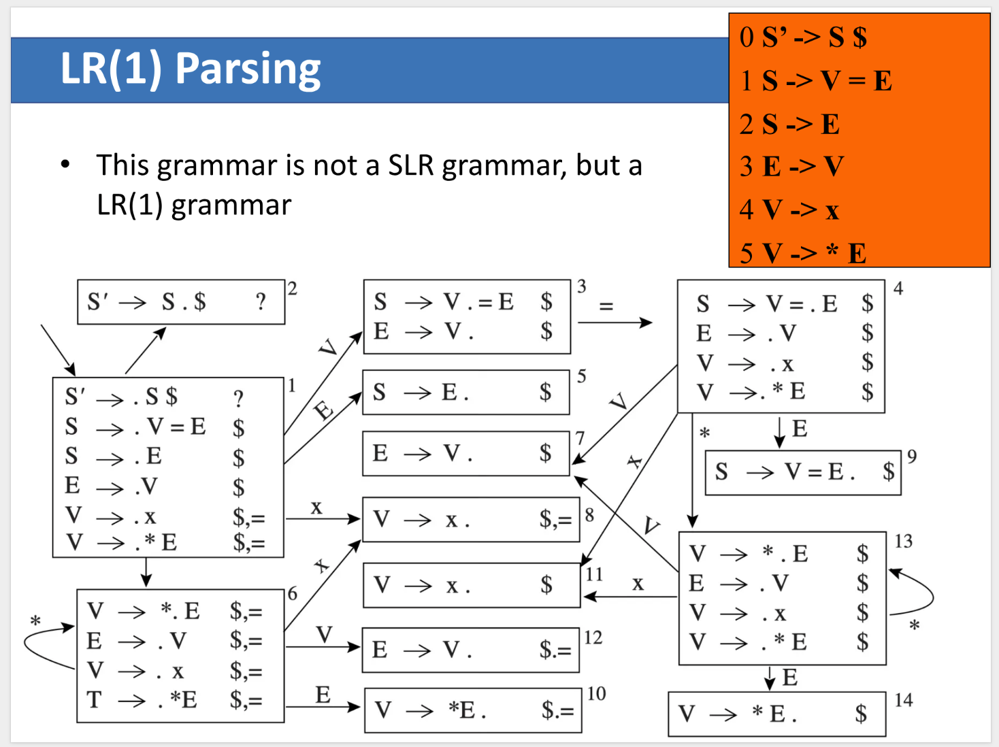
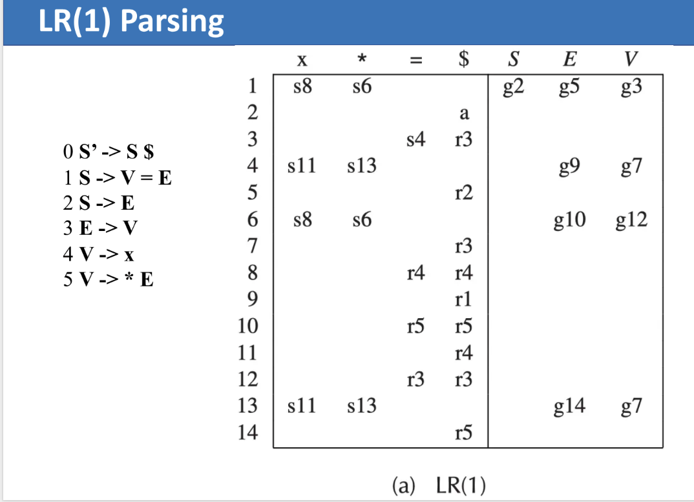
LR(1) Reduce Rule¶
当状态中存在完成项目
时，规约动作只放在那一个 lookahead z 对应的列里：
FOLLOW(A)是全局的；z是“当前这个具体语境下”的合法后继符号。
Why LR(1) Solves More Conflicts¶
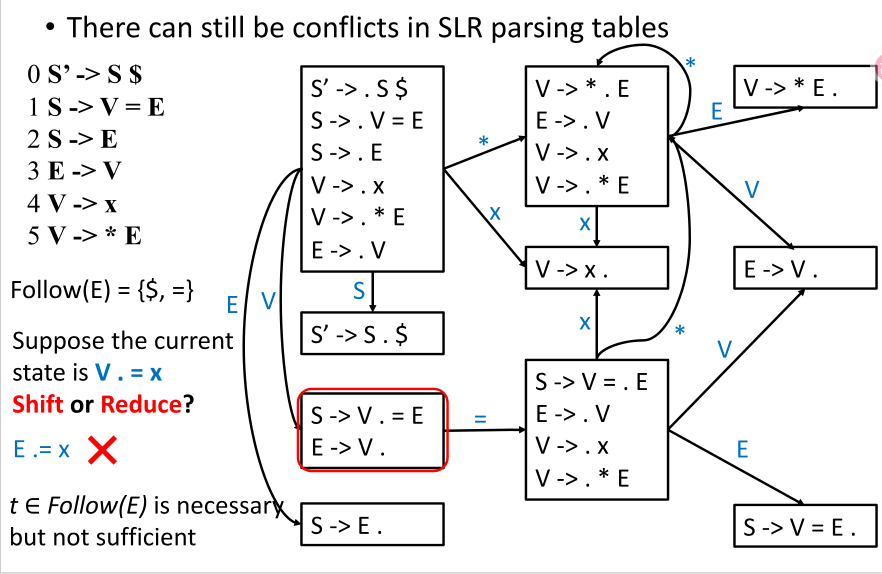
在这个文法中：
SLR会因为FOLLOW(E)过于粗糙而产生冲突。LR(1)会把不同语境拆成不同 item，例如某些E -> V .只在 lookahead 为$时规约，而另一些语境下可能应当继续移进=。
所以：
- \(t \in FOLLOW(E)\) 对 SLR 来说是必要条件，
- 但对某些文法来说并不是充分条件。
LALR(1) Parsing¶
为了在能力和表规模之间折中，工程上常使用 LALR(1)。
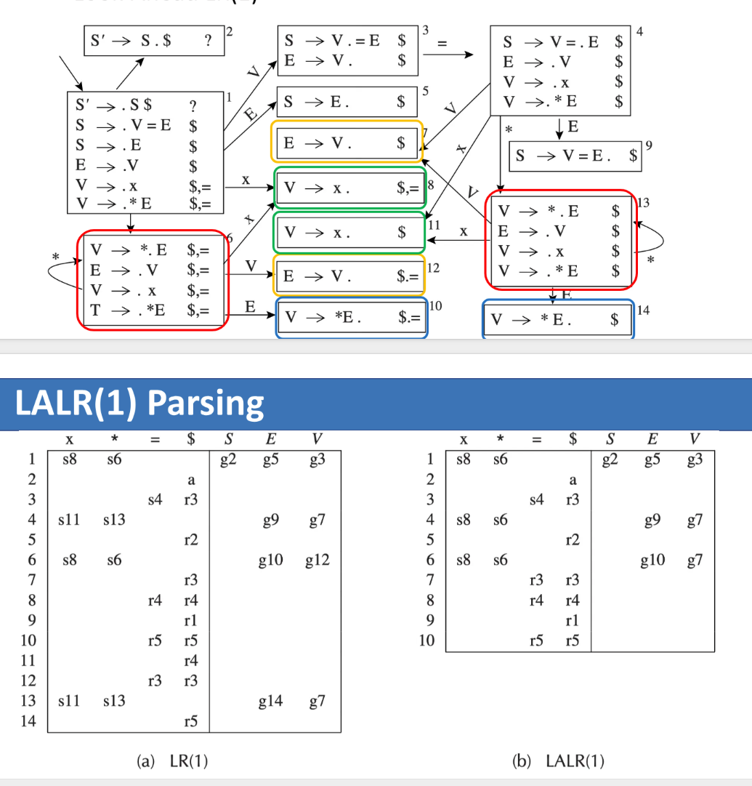
Core Idea¶
LALR(1) 从 LR(1) 出发：
- 如果两个 LR(1) 状态的 LR(0) core 完全相同，
- 只是 lookahead 集合不同，
- 就把它们合并。
这会带来两个结果：
- 分析表比 LR(1) 小得多。
- 能力通常接近 LR(1)，因此非常实用。
Practical Note¶
- 许多传统 parser generator（如
Yacc）使用的就是 LALR 思想。 - 个别文法在 LR(1) 中无冲突，但合并成 LALR(1) 后可能出现新的 reduce-reduce 冲突。
Hierarchy of Grammar Classes¶
在 LR 家族内部，表达能力大致满足：
- LL 文法更适合手写递归下降分析器。
- LR 文法表达能力更强，更适合自动生成的 shift-reduce parser。
- 现代编译器工具链里，LALR(1) 和 LR(1) 都非常重要。
Summary
可以把三者的差别概括为：
LR(0): 只看当前状态，不看 lookahead。SLR: 仍使用 LR(0) 状态，但 reduce 时参考FOLLOW。LR(1): 状态本身就携带 lookahead，按具体语境决定 reduce。
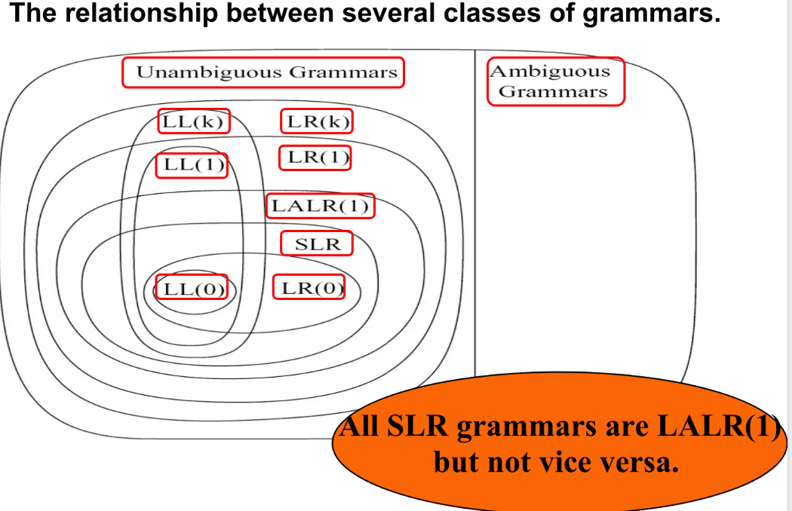
LR Parsing of Ambiguous Grammars¶
LR 分析器也会遇到二义性文法，最经典的例子就是 dangling else：
对输入：
存在两种解释：
else和最近的then匹配。else和更外层的then匹配。
大多数编程语言都选择第 1 种，因此 LR 表中这里通常会体现为一个 shift-reduce conflict，并采用 prefer shift 的策略，让 else 尽量归属于最近的 then。
Two Common Solutions¶
Rewrite the Grammar¶
通过引入 Matched / Unmatched 风格的辅助非终结符消除二义性：
其中：
M表示所有then都已经匹配。U表示还存在未匹配的then。一旦这个if写了else，那么then里不允许再出现还没配上else的内层if
Keep the Grammar but Resolve the Conflict by Policy¶
在某些 parser generator 中，可以保持原文法不变，再通过冲突处理策略指定：
- 遇到这里的 shift-reduce conflict 时，优先选择
shift。
但要注意：
- 大部分 shift-reduce conflict 都意味着文法规格还不够清晰。
- reduce-reduce conflict 通常更危险，往往应该优先回到文法层面修正。
Error Recovery¶
当预测分析器查表遇到空白条目时，即发现了语法错误。常见的处理方式：
- 抛出异常并退出: 直接停止解析（不推荐，对用户不友好）。
- 打印错误并尝试恢复:
- 可以通过插入、删除或替换 Token 来恢复。
- 通过删除恢复 (Deletion): 这是更安全的做法。跳过当前的输入 Token，直到遇到属于当前非终结符 FOLLOW 集合 中的 Token 为止（例如使用
skipto(Tprime_follow)函数）。这保证了循环最终会在遇到 EOF 时终止，避免死循环。
Parser Implementation & Yacc¶
在了解了自底向上的 LR 分析理论后，我们可以使用工具来自动生成语法分析器。Yacc (Yet another compiler-compiler) 是一种广泛使用的 LALR(1) 语法分析器生成工具。
- 输入与输出：Yacc 接受一个规范文件（通常后缀为
.y），并输出包含语法分析器 C 源代码的文件（通常后缀为tab.c）。 - 基本结构：Yacc 文件的结构与 Lex 类似，分为三个部分：
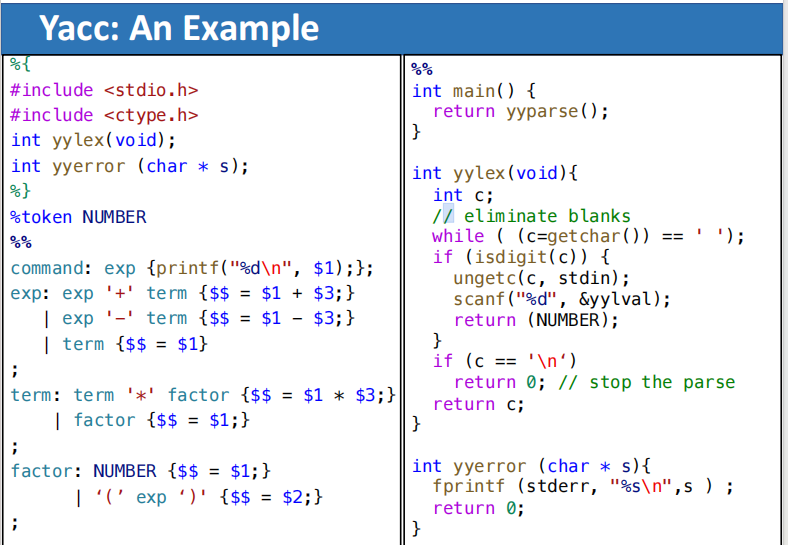
Note
=== "DEFINITIONS": 两种识别 Token 的方式：
- 在语法规则中，单引号括起来的字符会被识别为其本身。例如：`'+'`
- 可以通过 YACC 的 `%token` 声明定义符号化的 Token。
- 例如：`%token NUMBER`
- 使用 `%start` 指令可以定义文法的起始符号。
=== "RULES": - 规则格式：Rule {Action Code} - 语法与 lex 类似 - 当分析器用该规则进行规约（reduce）时，动作代码会被执行 - 动作代码通常写在每个产生式分支的末尾，也可以在产生式内部嵌入动作代码（embedded actions）
Core Auxiliary Routines¶
在 Yacc 中，有几个关键的内置函数和交互机制：
yyparse()：语法分析的主函数。如果解析成功则返回 0，失败则返回 1。yylex()：由yyparse()调用的词法分析器函数。它返回一个 Token 类型，并将该 Token 的语义值存储在全局变量yylval中。当遇到输入结束时，yylex会返回 0。yyerror(char *s)：当解析过程中遇到语法错误时，用于打印错误信息的函数。
yyparse() 的核心控制流程可以抽象成：
flowchart TD
A[读取当前栈顶状态 state] --> B[查看当前输入符号 lookahead]
B --> C[查询 ACTION[state, lookahead]]
C --> D{表项类型}
D -->|shift s| E[移进当前 token\n压入新状态 s]
D -->|reduce A -> beta| F[按 beta 长度弹栈\n执行规约动作]
D -->|accept| G[分析成功结束]
D -->|error| H[报告语法错误]
E --> A
F --> I[查询 GOTO[top, A]\n压入规约后的新状态]
I --> A也就是说，Yacc 并不是“看到某条产生式右部完整了就立刻规约”，而是始终由当前状态和当前 lookahead 共同决定下一步动作。
Semantic Values & Pseudovariables¶
在解析规则时，可以通过动作代码 (Action Code) 来处理语义值。Yacc 维护了一个语义值栈 (Value Stack)，与状态栈平行。
- 伪变量 (Pseudovariables)：
$$：代表当前规则左部 (LHS) 非终结符的语义值。$i：代表当前规则右部 (RHS) 第 \(i\) 个符号的语义值。
YYSTYPE与%union：- 默认情况下，
yylval和所有语义值的类型YYSTYPE都是int。 - 不同的文法符号可能需要不同类型的语义值（例如浮点数、AST 节点、字符串）。为了支持多态，可以通过
%union声明一个联合体。 - 使用
%type <variant>可以为特定的非终结符指定语义值类型，对于 Token，则在定义时指定如%token <variant> NUMBER。
- 默认情况下，
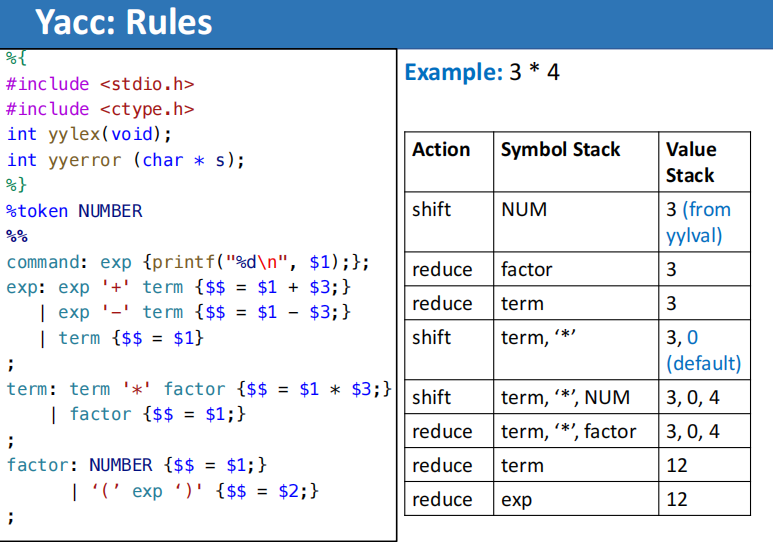
Embedded Actions¶
有时需要在某个产生式还未完全规约时就执行特定的代码。例如，考虑如下文法：
如何记录每个id 的类型？
在 Yacc 中，可以通过在产生式右部插入嵌入动作来实现。例如：
decl: type { current_type = $1; } var_list
;
type: INT { $$ = INT_TYPE; }
| FLOAT { $$ = FLOAT_TYPE; }
;
var_list: var_list ',' ID { setType(tokenString, current_type); }
| ID { setType(tokenString, current_type); }
;
这里，{ current_type = $1; } 是一个嵌入动作，在 type 识别完成后、var_list 识别前执行。这样可以确保在处理 var_list 时，current_type 已经被正确设置，从而为每个 id 赋予正确的类型。
有时需要在产生式的不同位置执行动作，可以通过引入辅助规则实现：
等价于：
这种方式可以在产生式的任意位置插入动作代码，便于实现更灵活的语义处理。
Handling Conflicts & Precedence¶
Yacc 能够报告由于二义性导致的 Shift/Reduce 和 Reduce/Reduce 冲突。
Yacc 默认的冲突解决策略
- Shift/Reduce 冲突：Yacc 默认选择移进 (Shift)。
- Reduce/Reduce 冲突：Yacc 默认选择在文法中先出现的规则。
- （注：大多数 S/R 冲突和所有 R/R 冲突都属于严重问题，应通过重写文法消除。）
为了在保持自然语法的同时解决表达式中的优先级和结合性二义性，Yacc 提供了优先级指令 (Precedence Directives)：
* %left：左结合（倾向于 Reduce）。
* %right：右结合（倾向于 Shift）。
* %nonassoc：无结合性（产生错误动作）。
这些指令赋予了操作符特定的优先级，优先级越往后声明越高。Yacc 比较当前输入 Token 的优先级与当前规则的优先级（由 RHS 最后一个 Token 决定，或通过 %prec 强制指定），优先执行高优先级的动作。
对于“什么时候该执行规约”这个问题，可以把 Yacc 的判断近似理解成下面这张图：
flowchart TD
A[当前状态中出现完成项目\n如 A -> alpha .] --> B[查看当前 lookahead]
B --> C{ACTION[state, lookahead]}
C -->|reduce A -> alpha| D[执行规约]
C -->|shift| E[暂不规约\n继续移进]
C -->|conflict| F[按优先级/结合性或默认策略处理]
C -->|error| G[报告语法错误]因此，规约发生的必要条件通常有两个：
- 当前状态已经表明“某个产生式右部识别完成”。
- 当前 lookahead 所在的表项确实填写的是
reduce，而不是shift、accept或error。
例如
在这里 TIMES 和 DIV 的优先级高于 PLUS 和 MINUS，而 EQ 和 NEQ 的优先级最低。这样就能正确解析诸如 a + b * c == d 这样的表达式。
Advanced Error Recovery¶
在实际的编译器实现中，我们希望编译器能报告程序中的所有错误，而不仅仅是第一个，这就需要更高级的错误恢复技术。
Local Error Recovery¶
局部错误恢复的核心思想是：在检测到错误的位置调整分析栈和输入流，以便能够继续解析。Yacc 提供了一种基于特殊终端符号 error 的局部恢复机制。
- 机制解析：在语法规则中，可以将
error作为一种占位符。当 LR 分析器进入错误状态时，它会执行以下动作：- 如果当前状态无法对
error执行移进操作，则不断弹出栈顶元素，直到遇到包含error移进动作的状态。 - 移进 (Shift)
error符号。 - 不断丢弃输入符号，直到找到一个可以合法执行非错误动作的 Lookahead Token（这类词法标记被称为“同步标记 synchronizing tokens”）。
- 恢复正常的语法分析。
- 如果当前状态无法对
- 潜在风险：弹出状态可能导致某些语义动作出现问题，特别是当语义动作包含不可逆的副作用（如修改全局作用域变量）时。
Global Error Repair¶
局部恢复容易在错误发生点附近造成信息丢失。Burke-Fisher 错误修复是一种全局技术，它寻找最小的插入、删除和替换集合，使源代码变成语法正确的字符串，即使根本原因不在分析器报告错误的地方。 * 实现原理： * 分析器同时维护两个栈：当前栈 (Current Stack) 和 旧栈 (Old Stack)。 * 保留一个固定长度为 \(K\) 的 Token 队列（缓冲队列）。 * 当发生语法错误时，Burke-Fisher 会尝试在队列中的任意位置进行单字符插入、删除或替换操作，然后尝试从旧栈重新开始解析。 * 评判标准：如果某次修复能让分析器在当前位置之后成功解析最远的距离（例如向后解析 3 到 4 个 Token），就认为这是一次成功的修复。